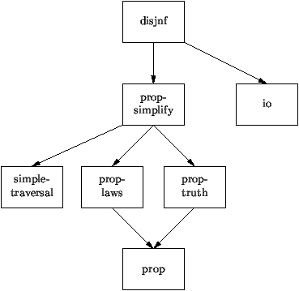

The Stratego Tutorial
Eelco Visser
March 15, 2001
This document is also available in Postscript.
1 Stratego at a Glance
1.1 Specifying Program Transformation Systems with Stratego
Stratego is a language for the specification of program
transformation systems based on the paradigm of rewriting
strategies. Stratego specifications give rise to term
transformers that read a term and output a transformed
term. Such transformation components can easily be composed
into transformation pipelines.
Term Transformation Systems
Stratego is a language for the specification of automatic
program transformation systems. In the Stratego model, a
program transformation system is a program that reads a
program, applies a transformation to it, and, if that
succeeds, spits out the transformed program or otherwise
states that it failed (Figure 1). Programs
are supposed to be represented by means of abstract syntax
trees or terms. A transformation system is thus a
program that transforms terms to terms.
Transformation components can be composed into pipelines that
interface by means of intermediate terms
(Figure 2). In this fashion large program
transformation systems can be built from small reusable
components, provided that the components synchronize on the
intermediate languages used.
Specifying Transformations with Rewriting Strategies
Basic transformation rules can be expressed as term
rewrite rules of the form l -> r that transform a term
matching l to an instantiation of r.
Pure rewrite rules with a standard evaluation strategy are not
sufficient for most program transformation jobs, because more
fine grained control over their application is needed. Usually
such control is encoded in the rewrite rules themselves,
leading to bad reusability of rules and a large overhead for
expressing traversals over the abstract syntax tree.
Instead Stratego offers a language of user-definable
rewriting strategies that provide control over the
application of transformation rules. This is achieved by a
set of operators for the expression of generic traversals over
abstract syntax trees (Figure 3). The basic
operators can be combined to achieve a wide range of traversal
algorithms.
The use of strategies greatly reduces the overhead caused by
explicitly programming term traversals. Furthermore, since
individual transformation rules are freed from the burden of
encoding traversals, they can be reused in other situations.
Finally, the strategy operators turn out to be an interesting
new programming paradigm that allow one to reach deep into
terms without much effort.
Figure 1:
Basic architecture of a transformation system
Figure 2:
Composition of transformation systems
Figure 3:
Generic term traversal
1.2 When to use and not to use Stratego
Stratego is designed for the scheduling of the application of
a series of local transformation rules on terms. Therefore,
the language is primarily useful in source to source program
transformation, application generation and code generation.
It is not designed for theorem proving, program analysis,
interactive program derivation or general purpose programming,
although it can be used to assist in these activities.
What Stratego is for
Stratego is designed for the specification of automatic
program transformation systems. Typical application areas of
automatic program transformation are source-to-source
transformations, application generation, code generation,
program derivation and documentation generation.
Source-to-source transformation is the transformation of a
program to a program in the same language. Examples of source
to source transformations are simplification, optimization and
desugaring, i.e., the elimination of syntactic abstractions.
Application generation is the translation of a program in a
high-level (end-user) application language to an
implementation in a general purpose programming language.
Code generation is the translation of program constructs to
sequences of machine code instructions.
Automatic program derivation is concerned with the generation
of programs from data. Examples of program derivations are
the derivation of a constructor signature from a context-free
grammar and the derivation of a pretty-printer from a
context-free grammar [1].
Documentation generation is the extraction of documentation
information from a program.
Program analysis is concerned with deriving properties about
elements of programs. Examples of program analysis are type
checking, type inference, and data flow analysis. Although
Stratego can be used to implement such analyses, it is not
particularly well supported. This aspect should probably be
strengthened.
What Stratego is not for
Stratego is not necessarily applicable in other areas of
program manipulation related applications. In particular, it
is probably not the right platform for interactive program
transformation, theorem proving and general purpose
programming.
Interactive program transformation is concerned with the
gradual transformation from a high-level specification to an
implementation by intervention from a programmer. The
programmer has to decide what refinement steps to apply to
what part of the specification. However, Stratego can be used
to make program transformation scripts that automatically
transform a specific specification to an implementation. Such
scripts can be written incrementally to reflect the increased
understanding of the refinement.
Theorem proving is used for establishing correctness of
programs. Stratego does not support theorem proving.
However, it can be used to generate proof obligations as input
for theorem provers.
Stratego is not a general purpose programming language to use
for application programming, user-interface implementation,
etc. However, it can very well be used to generate or
transform programs in a general purpose language.
Figure 4:
Application areas
-
Abstract and concrete syntax tree manipulation
- Simplification
- Optimization
- Desugaring (eliminating syntactic abstractions)
- Code generation
- Application generation
- Documentation generation
- Program analysis
Figure 5:
Non application areas
-
Theorem proving
- Interactive program transformation / derivation
- General purpose programming
1.3 Stratego Features
Figure 6:
Key features of Stratego
-
Modular specification of transformation systems
- Separation of rules and strategies
- Reuse of rules
- Primitive operators of rewriting
- Concise specification of term traversals
- Administration of failure
- Generic operations on (anonymous) trees
- Persistent terms
Figure 7:
Features not supported by Stratego
-
Higher-order abstract syntax
1.4 Using the Stratego Documentation
To support the production of Stratego specifications, the
distribution comes with four documents: a tutorial, an
overview of the library, a reference manual and the
documentation of the compiler.
The Stratego Tutorial
The Stratego Tutorial shows how to install and use the
Stratego compiler and gives basic examples of Stratego
specifications. The tutorial is basic reading material for
every Stratego user.
The Stratego Library
The Stratego Library documents all generic rules and
strategies in the standard library that comes with the
distribution. The Library includes the declaration of all
primitive operations (I/O, string manipulation, arithmetic,
process creation, etc.). Refer to the library to find common
strategies and to understand the primitive operations.
The Stratego Reference Manual
The Stratego Reference manual documents all constructs of the
language by giving their syntax and a description of the
semantics. Refer to the reference manual to clarify syntactic
issues and understand the concepts of the semantics.
The Stratego Compiler
The Stratego Compiler contains the complete annotated source
of the compiler and run-time system. The compiler should be
read by Stratego developers and those that want to get a
detailed understanding of the implementation of the
operational semantics. It should not be necessary to read the
Compiler for ordinary use. However, it is a case study of the
use of Stratego and in which a number of idioms are used.
Other Stratego Publications
Several other publications introduce Stratego, discuss
applications, semantics and related work. See for example
[JV99, 2, 3, 7, 8].
2 Installation
2.1 Downloading Stratego
Stratego is available on the Internet. The Stratego
distribution contains the sources of the Stratego compiler and
the Stratego compiler. Utilities for use with Stratego are
available in separate packages.
The Stratego Package
The Stratego compiler is implemented in Stratego itself. The
distribution contains the bootstrapped C sources of the
compiler, the implementation of the run-time system, the
Stratego library, the Stratego sources of the compiler, and
the Stratego documentation.
Downloading
The latest release of the Stratego compiler can be found at
the Stratego web page:
http://www.cs.uu.nl/~visser/stratego/. Download the
latest release stratego-x.x.tar.gz
Requirements
The following packages are required for the installation of
Stratego:
-
ATerm library
- gmake
- gcc [developed with version egcs-2.91.66]
- bison, flex
Except for the ATerm library, these are all standard elements
of a GNU installation.
Starting with version 0.4.4a, the ATerm library is no longer
bundled with the Stratego distribution. It is available via
the Stratego web page though.
The distribution for Stratego version 0.5a has
been tested on Linux (RedHat 6.0) on a Pentium II. Previous
versions have been tested also on Sun4 and Solaris.
Installation under IRIX at SGI machines has been problematic
for previous versions. Installation under Windows NT with
Cygnus has not yet been attempted. I would be interested in
hearing any reports from such an attempt.
2.2 Installing Stratego
The Stratego distribution has been prepared with autoconf and
automake and should be portable to any platform with the
required packages. Installation requires only the
configuration of the package using a configuration script.
Installing the ATerm Library
Choose a location for the installation of the aterm package, say
/loc/of/aterm/.
> cd /loc/of/aterm/
Download the ATerm package aterm-x.y.tar.gz. Unpack it
using the command
> tar zxf aterm-x.y.tar.gz
Configure the aterm package, setting the prefix to the
directory where the library should be installed, i.e., if
prefix points to directory dir, then the library will
be installed in dir/lib and the executables in
dir/bin.
> cd aterm-x.y
> ./configure --prefix=/installation/of/aterm
make
> gmake
and install
> gmake install
Unpacking the Stratego Package
Choose a location for the installation of Stratego, say
/loc/of/stratego/.
> cd /loc/of/stratego/
Download the Stratego package stratego-x.y.z.tar.gz.
Unpack it using the command:
> tar zxf stratego-x.y.z.tar.gz
> cd stratego-x.y.z/
Configuring the Stratego Package
If you only intend to use the Stratego compiler and not work on its
development set prefix to any appropriate value when installing, e.g.,
> ./configure --prefix=/usr/local \
--with-aterm=/installation/of/aterm
The directory /installation/of/aterm should be the same
as the prefix you configured the aterm library with. If
prefix points to directory dir, then the Stratego
compiler will be installed in dir/bin, the libraries in
dir/lib and the Stratego library in dir/share/stratego.
If you intend to change the compiler specification in spec/
and bootstrap the compiler, you need to set prefix to the
local directory. Or at least a directory where you have write
permissions such that it is easy to re-install the
compiler. This is the what I usually do:
> ./configure --prefix=`pwd` \
--with-aterm=/installation/of/aterm
This entails that you need to include `pwd`/bin in your
PATH.
Note that this last option may also be needed if you don't
have permissions to install in standard installation
directories.
Making and Installing
For both kinds of configurations, make the compiler by
> gmake
> gmake install
Setting the PATH
Finally, extend the definition of your path to point to the
stratego compiler. In a user configuration, set
> PATH=/usr/local/bin:$PATH
In a developer configuration, set
> PATH=/loc/of/stratego/bin:$PATH
Checking the Installation
Now check that the compiler is installed by typing
> which sc
which should return something like
/loc/of/stratego/bin/sc
Figure 8: Summary of the installation procedure
> cd /loc/of/stratego/
> tar zxf stratego-x.y.z.tar.gz
> cd stratego-x.y.z
> ./configure --prefix=/usr/local \
--with-aterm=/installation/of/aterm
> gmake
> gmake install
2.3 Structure of the Distribution
Figure 9: Structure of the Stratego distribution
-
spec : sources of the compiler components
-
back : back-end
- form : format checking
- front : front-end
- lib : library of the compiler
- match : matching automaton
- opt : optimizer
- post : post-processing
- pp : pretty-printing
- rts : run-time system
- sc : the Stratego compiler; glues components together
- si : the Stratego interpreter
- sig : signatures
- slib : Stratego library
-
spec : specifications
- src : C implementation of primitives
- syn : syntax
- test : regression tests
- src : the bootstrapped compiler components
-
a mirror of the spec tree with only the generated
C code, without specifications
- test : regression tests
- doc : documentation
-
compiler
- library
- reference
- tutorial
- xmpl : example specifications
- share
-
tex : LaTeX packages
- stratego : installed Stratego library
- bib : BibTeX files
- www : Stratego web page
- bin : installed executables
- include : installed include files
- lib : installed binary libraries
2.4 Bootstrapping the Stratego Compiler
The Stratego compiler is defined in Stratego. The distribution
contains the complete Stratego source of the compiler. This
makes it possible to adapt the language and/or its
implementation. In order to obtain a new working compiler it
is necessary to follow a careful bootstrapping procedure.
To create a new version of the compiler, edit the appropriate
files in the spec/* directories to reflect the change in the
run-time system, compiler, and/or parser. Then do the
following
> cd spec
> make
> make install
Then use the generated compiler to compile some test
specifications. If that seems to work, try to bootstrap by
> make bootstrap
This will compile the compiler components with itself.
If this goes wrong at some point, you'll have to reinstall the stable
compiler in the src/ tree:
> cd ..
> make install
It can be useful to have two installations of the compiler,
one of them the stable compiler from src. To achieve this, do
the following.
-
Make a user configuration as described above and make and
install the compiler with this configuration. This puts a
stable version of the compiler in a standard place like
/usr/local/bin.
- Make a developer configuration as described above.
- In one terminal use the stable compiler to compile the
compiler components, i.e.,
PATH=/usr/local/bin:$PATH
- In another terminal use the newly compiled compiler to test
your changes i.e.,
PATH=/path/to/stratego/bin:$PATH
Now if something goes wrong it is easier to recompile the
compiler components.
Figure 10: The bootstrapping procedure
3 Stratego by Example
3.1 Developing Transformation Systems with Stratego
A Stratego specification consists of a collection of modules
that contain signatures, rules and strategies that together
define a transformation system. The Stratego compiler
translates a specifiation to an executable program that can be
used to transform terms.
A Stratego specification defines a transformation on terms. A
specification consists of a signature describing the structure
of the language, rules that define the steps of the
transformation, and strategies that combine the rules in a
transformation system.
All these elements can be mixed in any order in one big
file. However, to make specifications reusable, Stratego
provides a module system that can be used to spread
definitions over several files. Thus, a specification consists
of a collection of modules that define signatures, rules and
strategies.
It is usually a good idea to divide a specification over
several modules: one defining the language, several definining
various sorts of transformation rules and strategies, and one
definining the main strategy that applies these rules.
An executable transformation system can be derived from a
specification by means of the Stratego compiler sc.
Compiled specifications can be used to transform terms.
Specifications are rarely correct in one go. Some errors are
caught by the compiler, others have to be detected by
inspection of the specification and by debugging techniques.
Example: Simplification of Propositional Formulae
As an example, consider the simplification of propositional
formulae. Figure 12 shows the import graph for
the specification. An arrow points from the importing module
to the module that is imported. Module prop defines the
signature of propositional formulae. Module prop-truth
defines the truth rules for the propositional
connectives. Module prop-laws defines a number of rules
defining sound transformations on formulae. Module
prop-simplify imports modules prop-laws and
prop-truth and defines various ways of combining the
rules in simplifying transformations. Module disjnf
declares one of these transformations, i.e., the
simplification of a formula to disjunctive normal form, to be
the main transformation.
In addition, module prop-simplify imports the module
simple-traversal, which defines a number of standard
term traversals. Module disjnf imports io,
which defines strategies for term input and output. The latter
two modules are part of the Stratego library.
Figure 11: The development process
-
Develop specification = collection of modules defining
-
Signature
- Rules
- Strategies
- Compile specification
- Use compiled specification
Figure 12: Import graph of a specification

3.2 Describing Terms with Signatures
Stratego specifications define transformations on terms. The
structure of terms can be described by means of signatures.
Terms
In the Stratego model, programs and all other objects that are
transformed are represented by means of terms. In their most
basic form, terms are described by the rule
t := C(t1,...,tn).
That is, a term is an application of a constructor C to
zero or more other terms.
An example term is
Not(Or(And(Atom("B"), Atom("A")), Atom("A"))
Tree Representation of Terms
A term can be represented by means of a tree
diagram. Figure 15 shows a tree diagram for the
example term above. Tree diagrams are a model for the
representation of terms in a computer's memory. Nodes
correspond to tree cells that contain a node tag and pointers
(arrows) to the cells corresponding to the sub-terms of the
node.
DAG Representation of Terms
In fact, in the Stratego implementation terms are represented
by means of directed, acyclic graphs (dags) that share
sub-terms. That is, occurences of the same sub-term are
actually represented by the same cell in memory. For instance,
the diagram in Figure 16 shows the sharing of the
sub-term Atom("A") by the And and the Or
node.
Signatures
A signature is used to describe the names of term constructors
and the number and type of their arguments. An operator
declaration
C : s
defines a nullary constructor C. An operator declaration
C : s1 * ... * sn -> s
defines an n-ary constructor C. A signature
characterizes a sub-set of the universal set of terms
described above.
For example, Figure 14 shows module module
prop (in file prop.r), which defines the
structure of propositional formalae. The signature defines
the sort Prop of propositional formulae. The operations
or constructors of the language are Atom that
constructs propositional letters, Not for negation,
And for conjunction, Or for disjunction,
Impl for implication and Eq for equivalence. The
term in Figure 13 is an example of a formula over
this signature.
Figure 13: A term representing a propositional formula
(file: prop.trm).
Not(And(Not(Or(Atom("A"), Not(And(Atom("B"), Atom("C"))))),
Atom("D")))
Figure 14: Signature of propostional formulae
(file: prop.r).
module prop
signature
sorts Prop
constructors
False : Prop
True : Prop
Atom : String -> Prop
Not : Prop -> Prop
And : Prop * Prop -> Prop
Or : Prop * Prop -> Prop
Impl : Prop * Prop -> Prop
Eq : Prop * Prop -> Prop
Figure 15: Tree structure of terms
Figure 16: Directed-acyclic graph structure of terms
3.3 Specifying Basic Transformations with Rules
Transformation rules are the basic components of
transformations defined in Stratego. A rule transforms a term
at the root if the term matches the left-hand side of the
rule. The result is the instantiation of the right-hand side
of the rule.
Transformation
A transformation is a modification of a term. An example of a
transformation on propositional formulae is the transformation
of an arbitrary formula to disjunctive normal form.
Rule
Transformations can be achieved by consecutively applying a
number of small modifications to a term. In Stratego, a
transformation rule defines a single transformation step. A
rule consists of a label (e.g., DMO), a left-hand side
term pattern (e.g, Not(Or(x, y))) and a right-hand side
term pattern (e.g., And(Not(x), Not(y)).
Notation:
DMO : Not(Or(x, y)) -> And(Not(x), Not(y))
Term Patterns are Terms with Variables
A term pattern is a term with variables. That is, term patterns
are described by the rule
tp := x | C(tp1,...,tpn),
where x is a variable. Variables do not have to be
declared. All nullary (i.e., non-applied) constructors that
are not declared in the signature are assumed to be variables.
Applying Transformation Rules
A rule defines a one-step transformation at the root of
a term. A rule applies to a term if the term matches the
left-hand side pattern of the rule. If that is the case the
term is replaced with the right-hand side of the term in which
the variables are replaced by the corresponding sub-terms that
were matched in the left-hand side. Thus a transformation rule
succeeds to apply if the left-hand side matches, and fails to
apply if that is not the case. In general, a transformation
may succeed or fail to apply to a term
For example, the De Morgan rule DMO transforms the term
Not(Or(And(Atom("B"), Atom("A")), Atom("A")))
to
And(Not(And(Atom("B"), Atom("A"))), Not(Atom("A")))
Figure 17 illustrates the effect of this
transformation on the tree structure of a term.
Figure 17: Application of rule
DMO to the root of term Not(Or(And(Atom("B"),
Atom("A")), Atom("A"))). Note that the sharing of the
common subterm Atom("A") is preserved.
3.4 Simplification Rules for Propositional Formulae
There are a great number of valid transformation rules on
propositional formulae. Although each is useful in itself,
together they form a non-terminating rewrite system.
Propositional formulae can be simplified using well-known
rules such as De Morgan's laws and distribution laws. Some of
these simplification rules are defined in module
prop-laws (Figure 19). Module
prop-truth (Figure 18) defines
rules for constant propagation in formulae.
Note that these rules give rise to a number of possible
normalizations of formulae. Interpretation of the rules as a
rewrite system is not useful since they define a
non-terminating system. For example, rules DAOL and DOAL can
be applied alternately without reaching a normal-form.
Figure 18: Truth rules for propositional
formulae.
module prop-truth
imports prop
rules
T1 : Not(True) -> False T2 : Not(False) -> True
T3 : And(True, x) -> x T5 : And(False, x) -> False
T4 : And(x, True) -> x T6 : And(x, False) -> False
T7 : Or(True, x) -> True T9 : Or(False, x) -> x
T8 : Or(x, True) -> True T10 : Or(x, False) -> x
T11 : Impl(True, x) -> x T14 : Impl(False, False) -> True
T12 : Impl(x, True) -> True T15 : Impl(True, False) -> False
T13 : Impl(False, x) -> True
T16 : Eq(False, x) -> Not(x) T18 : Eq(True, x) -> x
T17 : Eq(x, False) -> Not(x) T19 : Eq(x, True) -> x
Figure 19: Simplification rules for
propositional formulae.
module prop-laws
imports prop
rules
AA : And(And(x, y), z) -> And(x, And(y, z))
AO : Or(Or(x, y), z) -> Or(x, Or(y, z))
AI : Impl(Impl(x, y), z) -> Impl(x, Impl(y, z))
AE : Eq(Eq(x, y), z) -> Eq(x, Eq(y, z))
CA : And(x, y) -> And(y, x)
CO : Or(x, y) -> Or(y, x)
CE : Eq(x, y) -> Eq(y, x)
IDA : And(x, x) -> x
IDO : Or(x, x) -> x
IDI : Impl(x, x) -> True
IDE : Eq(x, x) -> True
DAOL : And(Or(x, y), z) -> Or(And(x, z), And(y, z))
DAOR : And(z, Or(x, y)) -> Or(And(z, x), And(z, y))
DOAL : Or(And(x, y), z) -> And(Or(x, z), Or(y, z))
DOAR : Or(z, And(x, y)) -> And(Or(z, x), Or(z, y))
DN : Not(Not(x)) -> x
DMA : Not(And(x, y)) -> Or(Not(x), Not(y))
DMO : Not(Or(x, y)) -> And(Not(x), Not(y))
DMI : Not(Impl(x, y)) -> And(x, Not(y))
DME : Not(Eq(x, y)) -> Or(And(Not(x), y), And(x, Not(y)))
DefN : Not(x) -> Impl(x, False)
DefI : Impl(x, y) -> Or(Not(x), y)
DefE : Eq(x, y) -> And(Impl(x, y), Impl(y, x))
DefO1 : Or(x, y) -> Impl(Not(x), y)
DefO2 : Or(x, y) -> Not(And(Not(x), Not(y)))
DefA1 : And(x, y) -> Not(Or(Not(x), Not(y)))
DefA2 : And(x, y) -> Not(Impl(x, Not(y)))
IDefI : Or(Not(x), y) -> Impl(x, y)
IDefE : And(Impl(x, y), Impl(y, x)) -> Eq(x, y)
3.5 Combining Rules into Transformation Systems with Strategies
Applying all transformation rules until none applies anymore,
is often not a good strategy in program transformation because
the transformation might not terminate or because many
different transformation paths are possible, one of which
needs to be chosen. Programmable strategies provide a way
to control the application of transformation rules.
Standard term rewriting apply rules using a default strategy
in which all rules are applied as long as possible. Therefore,
for a rewrite system to be meaningful it should be terminating
and confluent, i.e., whatever transformation path is chosen
the same term results.
In general, however, given a collection of meaningful
transformation rules many possible transformations on a term
are possible. Depending on the desired outcome, different
rules should be applied.
For example, the rules for transformation of propositional
formulae can be used to transform formulae to a wide variety
of normal forms. Formulae in disjunctive normal form
are disjunctions of conjunctions of atoms or negations of
atoms. Furthermore, disjunctive normal forms do not contain
implications, equivalences or truth values. A formula in
conjunctive normal form is a conjunction of
disjunctions of atoms or negations of atoms. Finally, any
propositional formula can be expressed using just implication
and False.
Each of these normal forms can be achieved by combining a
different selection of the rules from module
prop-laws into a transformation.
Transformation Strategies
Stratego supports user-definable strategies for the
application of transformation rules. A strategy is a program
that specifies which rules to apply in what order to which
sub-terms of a term.
Rule labels are basic strategies. Strategies are composed from
rule labels with a number of strategy operators. For example,
the specification in Figure 21 uses
non-deterministic choice (+), sequential composition
(;), and recursive closure (rec x(s)).
Application of transformations below the root of a
term is achieved by means of traversal operators such as
all(s), which applies the strategy s to all
direct sub-terms of the term to which it is applied.
In module prop-simplify the rules from modules
prop-laws and prop-truth are combined into
strategies that simplify formulae. Strategy disjnf
transforms propositional formulae to disjunctive normal form.
It defines a traversal over a term that pushes Nots
inwards on the way down and pushes Ands inwards on the
way up. Strategy conjnf transforms formulae to
conjunctive normal form in a similar way, but using
Or-distributivity instead of And-distributivity.
Strategy desugar defines implication and equivalence in
terms of conjunction, disjunction, and negation.
Figure 20: Simple traversal strategies. This is an
extract from the library module simple-traversal. See
the Stratego Library for more example strategies.
module simple-traversal
strategies
try(s) = s <+ id
repeat(s) = rec x(try(s; x))
topdown(s) = rec x(s; all(x))
bottomup(s) = rec x(all(x); s)
downup(s) = rec x(s; all(x); s)
downup2(s1, s2) = rec x(s1; all(x); s2)
oncetd(s) = rec x(s <+ one(x))
oncebu(s) = rec x(one(x) <+ s)
alltd(s) = rec x(s <+ all(x))
(* etc. *)
Figure 21: Simplification strategies
for propositional formulae.
module prop-simplify
imports prop-laws prop-truth simple-traversal
strategies
T = T1 + T2 + T3 + T4 + T5 + T6 + T7 + T8 + T9 + T10 +
T11 + T12 + T13 + T14 + T15 + T16 + T17 + T18 + T19
desugar = topdown(try(DefI + DefE))
eval = bottomup(repeat(T))
impl-nf = topdown(repeat(DefN + DefA2 + DefO1 + DefE))
disj-nf = innermost(DAOL + DAOR + DN + DMA + DMO)
conj-nf = innermost(DOAL + DOAR + DN + DMA + DMO)
3.6 Compiling Specifications to Executable Programs
A specification defines a transformation. To make the
transformation executable on a computer, it is necessary to
compile it to a standard programming language. The Stratego
compiler translates a Stratego specification to a stand-alone
C program.
The Main Strategy
In order to compile a specification it is necessary to
indicate the main transformation strategy that the compiled
program should apply to terms. The compiler assumes that a
definition for the strategy main exists that indicates
the transformation to perform. For example, module
disjnf in Figure 22 defines the strategy
main to first desugar the formula and then transform it
to disjunctive normal form.
Note the use of the strategy stdio in the definition of
main. Input/output behaviour needs to be defined in the
specifiation itself, i.e., it is not handled in a default
manner. The stdio strategy implements the most basic
interface, i.e., read a term from standard input and write the
result to standard output. stdio is defined in the
library module io.
Compiling Specifications
A specification is compiled with the Stratego compiler sc
by typing
> sc -i disjnf
Note that the suffix .r is not included in the name
provided to the compiler. During compilation the compiler
gives diagnostic output to indicate the progress of the
compilation process.
> sc -i disjnf
...
compilation succeeded
Compilation creates the C program disjnf.c and the
executable program disjnf.
Using Compiled Specifications
The executable disjn can be applied to a term to
transform it. For example, the formula in file
prop.trm is transformed by typing:
> disjnf < prop.trm
Or(Or(Atom("A"),Or(Not(Atom("B")),Not(Atom("C")))),Not(Atom("D")))
If rewriting fails the output would read
rewriting failed
Figure 22: Module defining main strategy.
4 disjnf
module disjnf
imports lib prop-simplify
strategies
main = stdio(eval; desugar; disj-nf)
4.1 Detecting Errors in Stratego Specifications
The errors made in Stratego programs can be classified into
syntactic errors and logical errors. Logical errors are errors
in the intended semantics of the specification. Syntactic
errors are violations of the syntax or static semantics of the
language. Not all syntactic errors are currently caught by
the front-end of the compiler.
If compilation fails there is something wrong with the
specification. The compiler should give an error message to
indicate what is wrong. The following types of errors may
occur.
Undefined Operator
If we forget the import of the library module prop-truth,
we get the error message
error: operator T1 undefined
that indicates that the rule T1 is not defined.
Unbound Variable
If in rule A9 we would make a typo:
AO : Or(Or(x, y), z) -> Or(x, Or(y, s))
i.e., s instead of z in the right-hand side, we get
the error message
error in rule AO : variable s: used, but not bound
that indicates that the rule is trying to build a term with an
uninstantiated variable.
Common Errors
The following are common errors
- strategy operator with wrong number of arguments
- term constructor with wrong number of arguments (run-time error)
- using term where strategy is expected (failure because of
non-applicable congruence, undefined operator if some of the
constructors are not defined in the signature)
- using a strategy where a term is expected
4.2 Debugging Stratego Programs
In order to detect logical errors in specification it
sometimes helps to understand what goes wrong at run-time (in
addition to carefully reading the specification).
Syntactic errors with run-time manifestation
- the transformation crashes mentioning an assertion violation
- the transformation crashes with a segmentation fault
these are caused by shortcomings in the implementation
Logical errors
- the transformation fails while it is expected to succeed
- the transformation succeeds, but with a wrong result
Splitting up the Specification
Often it is useful to test components of a specification to
narrow down the place where the error occurs
- comment out tail end of a transformation pipeline
- narrow down the subject term
The Debug Operator
The debug operator prints the current term to stderr.
The PrintStack Operator
The primitive print-stack prints the top n elements of
the stack if applied to an integer term (as in
where(<print-stack> n) or the entire stack if applied
to a non-integer term.
5 Further Reading
5.1 Extending Your Understanding of Stratego
This tutorial only scratches the surface of Stratego
specification. To extend your understanding of Stratego refer
to the other existing documentation and bug me with requests
to extend this tutorial.
Other Documentation
Refer to The Stratego Reference Manual for an overview
of all the language constructs.
Refer to The Stratego Library for a large number of
standard strategies. The modules in the library are self
documenting and often contain examples of the application of
the strategies.
Refer to The Stratego Compiler for an overview of the
implementation of Stratego and all the details of the
compilation process.
Publications
There are a number of publications on the design,
implementation and use of Stratego. See the bibliography for
references. While these publications do not always reflect the
current state of the language, they do reflect its spirit.
Topics for Future Inclusion in this Tutorial
Here are some topics that I consider for inclusion in this
tutorial. Which ones I tackle first will depend on popular
demand and my mood.
-
Discussion of (advanced) language constructs
- Primitives
- Architectures for program transformation
- Connecting Stratego components to other systems
This document was translated from LATEX by
HEVEA.